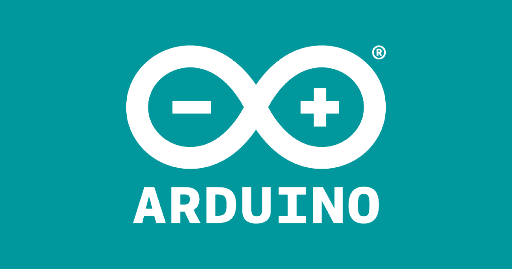

Arduino is an open-source electronics platform that enables you to
create interactive electronic projects. It consists of two main
components: the Arduino board (the hardware) and the Arduino software
(the programming environment).

Arduino Board:
The Arduino board is a small, programmable circuit board that
contains a microcontroller at its core. The microcontroller is like
a tiny computer that can be programmed to perform specific tasks.
Arduino boards come in various shapes and sizes, but they all have
input/output pins that allow you to connect and control different
electronic components such as sensors, motors, LEDs, and more.
Arduino Software:
To program the Arduino board, you use the Arduino software, also
known as the Arduino IDE (Integrated Development Environment). The
IDE provides a user-friendly interface where you can write, compile,
and upload code to the Arduino board. The programming language used
is a simplified version of C/C++, making it easier for beginners to
learn and use.
How Arduino Works:
With Arduino, you can create projects by writing code that controls
the behavior of the connected components. For example, you can write
a program that makes an LED blink at a specific interval, reads data
from a sensor, or even controls a robot's movements. The
possibilities are vast, limited only by your imagination and the
available electronic components.
Why Arduino is Beginner-Friendly:
Arduino is known for its beginner-friendliness due to several
factors:
-
Simplicity: The Arduino programming language is relatively easy
to understand, especially for those with little or no
programming experience.
-
Abundance of Resources: Arduino has a large and supportive
community that provides tutorials, example projects, and forums
where you can seek guidance and inspiration.
-
Affordability: Arduino boards are relatively inexpensive,
making them accessible to a wide range of users.
-
Versatility: Arduino can be used for various applications, from
simple projects like blinking an LED to more complex projects
involving robotics, home automation, or Internet of Things (IoT)
devices.